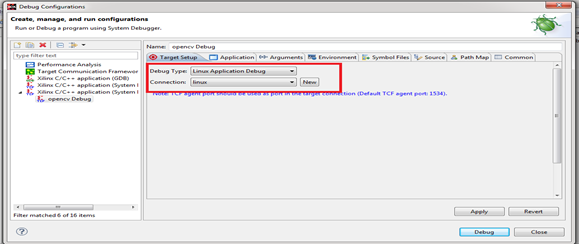

Debugging an OpenCV Application
To run an OpenCV application on a target:
-
Create Linux images enabling the Open CV and C++ libraries.
-
Create a PetaLinux project.
source /proj/petalinux/petalinux-v2016.3_daily_latest/petalinux-v2016.3-final/settings.csh petalinux-create -t project -s /proj/petalinux/petalinux-v2016.3_bsps_latest/Xilinx-ZCU102-v2016.3-final.bsp -
Use
petallinux-config -c rootfsto enable Open CV and C++ libraries. - Select all libraries at Filesystem Packages > libs > opencv.
- Select all libstdc++ libraries at Filesystem Packages > base > gcc-runtime-xilinx.
- To debug from Xilinx SDK, enable tcf-agent at Filesystem Packages > base > tcf-agent. Alternatively, you can run the agent independently after boot.
-
Save the kernel configuration and use
petalinux-buildto build the project.
-
Create a PetaLinux project.
- Use the image to boot Linux in any of the convenient boot mode.
-
After a successful boot, obtain the board IP address.
If you see an error while booting, change the
CONFIG_SYS_BOOTM_LENparameter in the u-boot config file according to the size of the image For example, add#define CONFIG_SYS_BOOTM_LEN 0x<imagesize>in the$PTLNX_PROJECT/subsystems/linux/configs/u-boot/platform-top.hfile. Build the PetaLinux project again and try booting with the new image. - Select Linux TCF Agent from the Target Connections view.
-
Double-click Linux Agent.
The Target Connection Details dialog box appears.
- Specify the board IP address, obtained during the boot, in the Target Connection Details dialog box.
- Create a new folder /tmp/opencv_lib in the Linux file system.
-
Copy the Opencv libraries to the newly created /tmp/opencv_lib folder in remote file system.
Note: The OpenCV libraries are located in the \<install_location>\SDK\<version>\data\embeddedsw\ThirdParty\opencv folder of your SDK installation. Where <install-location> is the SDK installation file path and <version> is the current version of the SDK.
- Create a Linux OpenCV application. For more details, refer Creating an OpenCV Template Application.
- Build the application.
-
Select Run > Debug Configurations.
The Debug Configurations dialog box appears.
- Click on Xilinx C/C++ application (System debugger) to create a new debug configuration.
-
On the Target Setup tab page, select Linux Application Debug from the Debug Type list.

-
On the Application tab page, specify the local .elf file path and the remote .elf file path.
Note: The remote .elf file path is /tmp/opencv.elf.

-
On the Environment tab page, click on the New button.
The New Environment Variable dialog box appears.
-
Set /tmp/opencv_lib file path to the OpenCV libraries in the LD_LIBRARY_PATH environment variable .

- Click OK to create the environment variable and close the New Environment Variable dialog box.
-
Click Debug.
You will be able to debug the OpenCV application using the system debugger.